The PlotDevice Colors library offers a set of tools to work with color more conveniently. You
can use the library to create colors by name (like red or ivory), from pixels in
an image, group them into lists of which you can then collectively manipulate hue, brightness
and saturation, create lists of harmonious colors based on color theory rules (like
complementary or analogous), create lists of gradient colors, work with drop shadows and
gradient fills for paths, define powerful indefinite color ranges (like bright
red or purplishgreenish), aggregate color information from Yahoo!, and more!
There’s a lot of stuff to explain but luckily most principles in the Colors library are
easy.
Some central themes are:
- Colors: enhanced color objects with many predefined instances.
- Color lists: sets of colors which can be manipulated as a whole.
- Rules: color theory rules that generate lists of colors.
- Color ranges: variable sets of colors whose HSB values are constrained between a minimum and a maximum value.
- Color themes: groups of ranges.
- Depth: lighting, shadows and gradients.
My personal favorites are shades and shadows and gradient fills.
If you have PlotDevice 1.10 or up, the library is integrated by default as the colors object.
Previous Version Download
| colors.zip (1.95MB) Last updated for PlotDevice 1.9.4.9 Licensed under GPL Authors: Tom De Smedt, Frederik De Bleser |
Documentation
- Colors
- Color lists
- Color lists from harmony rules (complementary, analogous, ...)
- Color lists from gradients
- Color ranges
- Predefines color ranges: shades (dark, bright, cool, ...)
- Grouping ranges into themes
- Aggregating colors from the web
- Using a shader for lighting effects
- Using dropshadows and gradient fills
Colors
The Colors library has a number of commands that create a new color you can use with fill() or stroke().
rgb(r, g, b, a=None, range=1.0, name="")
hsb(h, s, b, a=None, range=1.0, name="")
cmyk(c, m, y, k, range=1.0, name="")
lab(l, a, b, range=1.0, name="")
hex(str, name="")
With the range parameter you can define how you want to supply the channel values. For example, if you want to define r, g and b between 0 and 255 instead of between 0.0 and 1.0, set range to 255.
The optional name parameter lets you define a name for the color. Otherwise, a name will be guessed using the clr.nearest_hue() method (see below).
The hex() command creates a color from a hexadecimal string (e.g. ‘#30343D’).
named_color(str)
The named_color() command creates a color from a name like ‘olive’ or ‘maroon’ or ‘antiquewhite’. A list of all the named colors the command will recognize is here. The really great thing is that each of these named colors is also a command in the Colors library. So the two colors in the example below are exactly the same:
clr1 = colors.named_color("olive")
clr2 = colors.olive()
Color properties
Each of the above commands returns a Color object. It has all the standard properties a color created with the PlotDevice color() command also has. You can use these to find out the color’s R, B and B values, or its C, M, Y and K values, or its H, S and B values:
- clr.r: the red value in RGB.
- clr.g: the green value in RGB.
- clr.b: the blue value in RGB.
- clr.a: the alpha value (opacity).
- clr.c: the cyan value in CMYK.
- clr.m: the magenta value in CMYK.
- clr.y: the yellow value in CMYK.
- clr.k: the black value in CMYK.
- clr.hue: the hue of the color in HSB.
- clr.saturation: the saturation (grayness) of the color in HSB.
- clr.brightness: the brightness of the color in HSB.
The Color object in the Colors Library has some additional properties:
- clr.name: the name of this color.
- clr.is_black: will be True when the color’s R, G and B values are 0.
- clr.is_white: will be True when the color’s R, G and B values are 1.
- clr.is_gray: will be True when the color’s R, G and B values are the same.
- clr.is_transparent: will be True when the color is completely
transparent.
- clr.complement: the complementary color (i.e. 180 degrees across the color
wheel) of this color.
Color methods
Each color has a range of methods to manipulate it. Each of these returns a copy of the color.
clr.copy()
clr.darken(step=0.1)
clr.lighten(step=0.1)
clr.desaturate(step=0.1)
clr.saturate(step=0.1)
clr.adjust_contrast(step=0.1)
clr.adjust_rgb(r=0.0, g=0.0, b=0.0, a=0.0)
clr.adjust_hsb(h=0.0, s=0.0, b=0.0, a=0.0)
What is interesting about these methods is that you can also apply them to color lists. This way you can quickly manipulate sets of colors without having to change each color individually.
The clr.blend() command returns a mixture from this color and another color:
clr.blend(clr, factor=0.5)
The clr.rotate() command returns a color that is angle degrees across the color wheel. So when angle is 180, this returns the complementary color.
clr.rotate(angle=180)
The clr.analog() command returns hues that are next to this one on the color wheel,
separated by angle. The additional d parameter will slightly vary the color’s
brightness and saturation for more variation.
clr.analog(angle=20, d=0.5)
Another interesting method is clr.nearest_hue(). This returns the name of the name of a well-known hue this color resembles most (red, orange, yellow, lime, green, teal, cyan, azure, blue, violet, purple or pink). When the primary parameter is True, the name returned is limited to primary hues: red, orange, yellow, green, blue, purple, pink.
clr.nearest_hue(primary=False)
To get the distance between two colors as a number there’s the clr.distance() method. It returns a number between 0.0 and 1.0 representing the distance as if colors were arranged on a sphere (e.g. a disc of hues with the less saturated colors in the centre, darker discs in the sphere are at the bottom).
clr.distance(clr)
The clr.swatch() command draws a rectangle to the canvas filled with the color. The rectangle is located at x and y and has width w and height h.
clr.swatch(x, y, w=35, h=35, roundness=0)
Color lists
The functionality of the Colors library becomes more interesting when we get down to working with lists of colors. You can store different colors in a list and then manipulate the entire collection. For example, make all of the colors darker, retrieve the lightest color, or even create a list from pixels in an image for example.
list(clr1, clr2, clr3, ..., name="", tags=[])
list([clr1, clr2, clr3, ...], name="", tags=[])
list(imagepath, n=10)
list(word)
list(Web.KulerTheme)
Lists can be created from a number of indivdual colors, another list of colors, the pathname of an image from which to grab pixel values (you need to have the Core Image library installed), a word, or a kuler theme from the web.kuler.search() command in the PlotDevice Web library.
Optionally you can supply a name and a list of tags for the list.
Accessing each individual color in the list works the same as with any other list:
sea = colors.list("sea.jpg", n=20)
x = 0
for clr in sea:
rect(x, 0, 20, 20, fill=clr)
x += 20
You can also use the choice() command to get a random colors from the list.
Color list properties
Each of the above commands returns a ColorList object with a number of properties:
- list.name: the name of the set of colors.
- list.tags: a list of associations.
- list.darkest: the darkest color in the list (useful as a background or a text color for example).
- list.lightest: the lightest color in the list.
- list.average: the average (mean) color of all the colors in the list.
- list.complement: the complementary color list.
Color list methods
Some methods to manipulate the list. All of these will return a copy of the list.
list.reverse()
list.sort(reversed=True)
list.repeat(self, n=2, oscillate=False, callback=None)
The list.reverse() method returns a copy with all the colors in reversed order.
The list.sort() method returns a copy with the colors sorted from dark to light.
The list.repeat() method returns a repetition of the list: if the list contains a red, green and a yellow color, list.repeat() will contain red, green, yellow, red, green, yellow. When oscillate is True it will contain red, green, yellow, yellow, green, red. This is useful for lists of gradient colors.
list.swarm(x, y, r=100)
The list.swarm() method draws a small visualization of all the colors in the list.
| 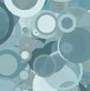 |
sea = colors.list("sea.jpg", n=20)
background(sea.darkest)
sea.swarm(50, 50)
|
All of the methods that work on a single color also work on a list of colors. They will transform all the individual colors in the list:
list.copy()
list.darken(step=0.1)
list.lighten(step=0.1)
list.desaturate(step=0.1)
list.saturate(step=0.1)
list.adjust_contrast(step=0.1)
list.adjust_rgb(r=0.0, g=0.0, b=0.0, a=0.0)
list.adjust_hsb(h=0.0, s=0.0, b=0.0, a=0.0)
list.analog(self, angle=20, d=0.5)
list.rotate(self, angle=180)
list.swatch(x, y, w=35, h=35, padding=0, roundness=0)
Color list sorting
The colors in a list can be sorted in various ways:
list.sort(comparison="hue", reversed=False)
list.sort_by_distance(reversed=False)
list.cluster(cmp1="hue", cmp2="brightness", reversed=False, n=12)
The basic list.sort() method allows you to sort by any color property (hue, brightness, red, magenta, ...)
The list.cluster() method sorts the list by the first given property, then cuts it into n pieces and sorts each of the pieces by the second given property.
Color list math
Individual colors (or lists of colors) can be added to a list with the + operator:
clrs = colors.list(
colors.purple().darken(),
colors.deeppink()
)
clrs += colors.violet()
clrs.swarm(50, 50)
|
Also, the * operator is equivalent to the list.repeat() method.
Color context
There’s one additional list.context property which is a list of words associated with the colors in the list. For example, red is commonly associated with things like anger and passion, while black is associated with death, grief, modernism.
If you put them together in a color list, its context will contain words like anger, drama and power.
clrs = colors.list( colors.red(), colors.black() ) clrs.swarm(50, 50) print clrs.context >>> ['anger', 'devil', 'drama', 'power', 'sex', 'strength'] |
The data is drawn from the files in the /context subfolder in the library. You can adjust them to your own needs. There’s also a dictionary with all the information:
print colors.context["red"]
Color lists from harmony rules
Color theory provides a visual guidance to color mixing and the visual impact of specific color combinations. With the Colors library you can create schemes from the following rules:
- complementary: colors that are opposite of each other on the color wheel.
- split complement: a combination of left complement and right complement.
- left complement: a variation with colors a bit to the left of the actual complement.
- right complement: a variation with colors a bit to the right of the actual complement.
- analogous: colors that are next to each other on the color wheel. These yield natural schemes, like shades of water or grass).
- monochrome: colors in the same hue that vary in brightness and saturation.
- triad: a color and two other colors that make up an equilateral triangle on the color wheel.
- tetrad: four colors that make up a cross on the color wheel.
- compound: a color with its complement and some analogs of those colors.
complement(clr)
complementary(clr)
split_complementary(clr)
left_complement(clr)
right_complement(clr)
analogous(clr, angle=10, contrast=0.25)
monochrome(clr)
triad(clr, angle=120)
tetrad(clr, angle=90)
compound(clr, flip=False)
All of the commands take a base clr from which a scheme is then derived. A color list is returned, usually containing three to six matching colors (except complement(), which just returns the original color and its complement). Notice that some commands have an angle parameter. This controls how far colors are apart on the color wheel. Making it bigger for the analogous() scheme introduces more variation.
There’s also a rule() command where you can supply the rule name as a string. All of
the rule names are stored in the rules list.
rule(name, clr, angle=None, contrast=0.3, flip=False)
print colors.rules >>> ['complement', 'complementary', 'split complementary', 'left complement', >>> 'right complement', 'analogous', 'monochrome', 'triad', 'tetrad', >>> 'compound', 'flipped compound']
With the rule() command we can quickly display all the possibilities for a color:
clr = colors.rgb(0.0, 0.4, 0.6)
x = 10
for name in colors.rules:
scheme = colors.rule(name, clr)
scheme.swatch(x, 10)
x += 40
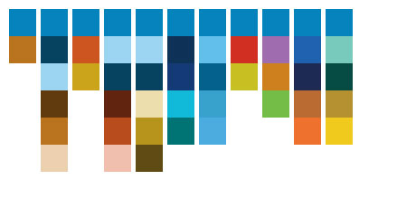
Here are some individual schemes:
| 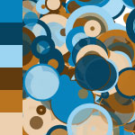 |
Complementary scheme: clr = colors.rgb(0, 0.4, 0.6) scheme = colors.complementary(clr) scheme.swarm(75, 75) scheme.swatch(0, 0, w=25, h=25) |
| 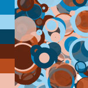 |
Left complementary: clr = colors.rgb(0, 0.4, 0.6) scheme = colors.left_complement(clr) scheme.swarm(75, 75) scheme.swatch(0, 0, w=25, h=25) |
|
Analogous: clr = colors.rgb(0, 0.4, 0.6) scheme = colors.analogous(clr) scheme.swarm(75, 75) scheme.swatch(0, 0, w=25, h=25) | |
| 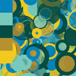 |
Flipped compound: clr = colors.rgb(0, 0.4, 0.6) scheme = colors.compound(clr, flip=True) scheme.swarm(75, 75) scheme.swatch(0, 0, w=25, h=25) |
Techies may want to note that calculations for the rules are performed on an artistic color wheel based on RYB instead of RGB. This system predates scientific color theory and is mathematically incorrect - but it does produce better color schemes.
Analog color scheme
When you want a realistic, organic feel to your composition you can work with analogous schemes. Remember how a color object in the Colors library has an analog() method? It’s very easy to use in a loop so that each element is subtly different:
size(600, 600)
nofill()
stroke(0.4, 0.5, 0)
strokewidth(0.1)
autoclosepath(False)
clr = colors.rgb(0.6, 0.4, 0, 0.5)
background(colors.dark(clr).darken(0.1))
colors.shadow(alpha=0.05, blur=0.2)
for i in range(50):
# Each strand of curves has an analogous color
# (i.e. hues that are next to each other on the color wheel).
# This yields a very natural effect.
stroke(clr.analog(angle=10, d=0.3))
x0 = WIDTH/2
y0 = HEIGHT/2
vx0 = random(-200, 200)
vy0 = random(-200, 200)
vx1 = random(-200, 200)
vy1 = random(-200, 200)
x1 = choice((-10, WIDTH))
y1 = random(HEIGHT)
for j in range(100):
beginpath(x0, y0)
curveto(
x0+vx0+random(80), y0+vy0+random(80),
x1+vx1, y1+vy1,
x1, y1
)
endpath()
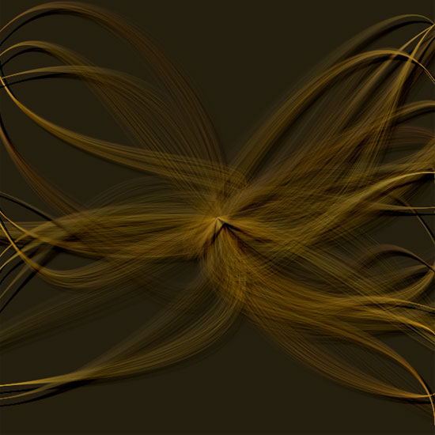
You can find this script fully documented in the library download.
Color lists from gradients
The Colors library has a handy gradient() command that takes a couple of colors and calculates all the intermediary steps between them.
gradient([clr1, clr2, clr3, ...], steps=100, spread=0.5)
gradient(clr1, clr2, clr3, ..., steps=100, spread=0.5)
You can supply base colors either as a list or simply as an enumeration of parameters. A color list is returned with additional colors that form a smooth transistion between the given base colors. The command has two optional parameters: steps which defines the number of colors in the returned list, and spread, which defines the midpoint of the gradient.
For example, here we create a gradient list from light blue to dark blue. For each color in
the list an oval is drawn that zooms inward. So we draw 60 ovals that go from light blue to
dark blue:
clr1 = colors.rgb(0.6, 0.8, 1.0)
clr2 = colors.rgb(0.0, 0.2, 0.4)
g = colors.gradient(clr1, clr2, steps=60)
for i in range(len(g)):
fill(g[i])
r = 700-i*10
oval(-75+i*5, -180+i*5, r, r)
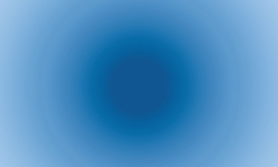
Let’s add a nice spiral to the composition. As you can see in the example below, I can reset the number of steps in the gradient list (the number of colors is updated accordingly) - I don’t need to create a new gradient. The same goes for the gradient spread. Additionaly, remember that g is a color list so I can use the reverse() method:
# append this to the previous code:
g.steps = 200
g = g.reverse()
colors.shadow(blur=12, alpha=0.3)
transform(CORNER)
translate(WIDTH/2, HEIGHT/2)
for i in range(len(g)):
fill(g[i])
rotate(3)
oval(i*0.5, i*0.5, 200-i, 200-i)
My personal favorite is the one with all the different hues of blue mixed up. It reminds me of Alice in Wonderland. Replace the above fill() command with:
fill(choice(g))
Gradient outlines
Finally, the Colors library has an outline() command which works extremely well with gradient(). The command colorizes the stroke of a path with the colors in a given list:
outline(path, colors, precision=0.4, continuous=True)
Outlines a path with the colors in the list. When continuous is False, each contour in the path starts with the first color in the list, and ends with the last color in the list. Because each line segment is drawn separately, the command works only with a corner-mode transform().
font("Georgia", 58)
p = textpath("gradient text is back!", 10, 50)
g = colors.gradient(color(1,0,0.5), color(0,0.5,1))
colors.outline(p, g)
Color ranges
A color range is a set of indefinite colors that have their hue, saturation and brightness constrained between a minimum and maximum value. You can use color ranges to quickly describe fuzzy concepts like dark and bright.
range(h=(0.0,1.0), s=(0.0,1.0), b=(0.0,1.0), a=(1.0,1.0),
grayscale=False, name="", length=100)
The h, s, b and a parameters are (min, max) tuples with min and max ranging between 0.0 and 1.0. A color range behaves like a list of length individual colors - although the colors will be different each time you draw them from the range.
For example, the following range contains colors with all sorts of saturation and brightness, but their hues are limited between red and limegreen:
| 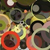 |
r = colors.range(h=(0,0.2))
r.swarm(50, 50)
print r[0:2]
>>> [Color(0.287, 0.276, 0.252, 1.000),
Color(0.089, 0.064, 0.026, 1.000)]
|
Color ranges often yield surprising results with a minimum amount of code:
r = colors.range(h=(0,0.2))
transform(CORNER)
rotate(45)
for i in range(HEIGHT/10):
fill(choice(r))
rect(-WIDTH, i*15, WIDTH*2, 20)
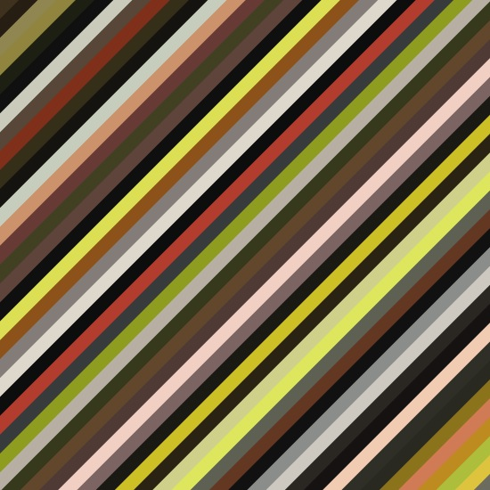
Color range methods, properties and calls
A color range has the following methods:
range.constrain_hue(min, max=None)
range.constrain_saturation(min, max=None)
range.constrain_brightness(min, max=None)
range.constrain_alpha(min, max=None)
More complex ranges including gaps can be created by assigning a list of (min, max) tuples to a property directly:
high_contrast_reds = colors.range() high_contrast_reds.h = 0 high_contrast_reds.s = (0.5, 1.0) high_contrast_reds.b = [(0.1,0.2), (0.9,1.0)]
Since a color range behaves like a color list it also has copy(), adjust_rgb(), repeat(), swatch() ... methods.
If you need a single color from the range you can use the range.color() method:
range.color(clr=None, d=0.035)
range.colors(clr=None, n=10, d=0.035)
However, you can also directly call a range like a command:
yellowgreenish = colors.range(h=(0.1,0.2)) background( yellowgreenish() )
When you call a color range like this you can supply three optional parameters:
- clr: a color to which hue is used to constrain anything drawn from the range.
- d: a small deviation to hue and brightness.
- n: if larger than 1 a color list of n elements is returned.
Last but not least, you can use the + operator to combine two ranges.
Predefined color ranges: shades
We’ve already included some predefined color range variables in the library for you. We call them shades. These includes useful concepts such as light and dark, defined by a combination of saturation and brightness.
All of the shades are in the shades list:
print colors.shades >>> [light, dark, bright, weak, neutral, fresh, soft, hard, warm, >>> cool, intense]
- light: bright and light colors.
- dark: deep and colorfully saturated.
- bright: colorful and friendly.
- weak: neither light, soft nor neutral.
- neutral: desaturated and neither bright nor dark.
- fresh: light and friendly with a higher saturation than soft shades.
- soft: gentle pastel colors with small difference in saturation.
- hard: powerful colors but lighter than intense shades.
- warm: gently saturated and gently bright.
- cool: cold, bright and desaturated.
- intense: powerful deep/bright contrasts.
Here’s a visual overview of all the shades. The shades list is traversed. Each individual shade is then called as a command (remember we can call color ranges like commands) and limited to a yellow hue. Since we also call the range with the n parameter, a list of range-constrained yellow colors is returned.
x = 20
y = 20
for shade in colors.shades:
text(shade.name, x, y-5, fill=0.2, fontsize=12)
clr = shade(colors.yellow(), n=10)
clr.swatch(x, y)
x += 45
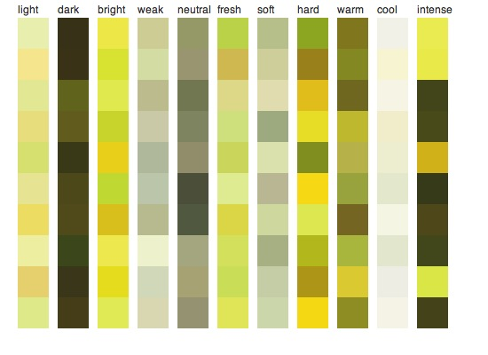
The shade() command returns a shade by name:
| 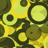 |
clrs = colors.shade("intense")
clrs = clrs(colors.yellow(), n=20)
clrs.swarm(50,50)
|
You can also use shade variables directly. Here’s a dark indigo color:
| 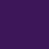 |
background(colors.dark(colors.indigo())) |
Intense colors of any hue by simply calling the intense range without any parameter:
| 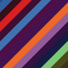 |
transform(CORNER)
rotate(45)
for i in range(HEIGHT/10):
fill(colors.intense())
rect(-WIDTH, i*10, WIDTH*2, 20)
|
Color shade inference
Now that we have learned about shades it is easy to deduce some information from individual colors. First of all, we can check if a colors falls within a certain shade range (check if a color is dark or bright for example):
clr = colors.red() print clr in colors.bright >>> True # red is a bright color.
And since we can find out if a color is dark, bright, neutral, cool, etc. we can guess a name for it:
print colors.guess_name( color(1, 0, 0.5) ) >>> bright pink
Grouping ranges into color themes
We can group different color ranges into a color theme. Each of the color ranges in a theme has a hue associated with it and a weight which determines its frequency in the theme. Simply put, a sand theme would be made up of combinations like 50% soft ivory, 25% dark goldenrod and 25% warm brown.
theme(name="", guess=False, length=100)
The theme command returns a ColorTheme object with the following properties:
- theme.name: the name of the theme.
- theme.ranges: a list of (color, range, weight)-tuples.
- theme.tags: a list of associated keywords.
- theme.length: the number of colors returned in a for-loop.
To add a color range to the theme you use the theme.add_range() method:
theme.add_range(range, clr=None, weight=1.0)
You can supply shades, your own color ranges, or a shade + named color string to the range parameter. The following two themes are the same (by ‘the same’ we mean that they contain the same ranges - however, their output may vary as ranges do not contain fixed colors).
| 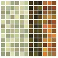 |
sand = colors.theme() sand.add_range(colors.soft, colors.ivory(), weight=0.5) sand.add_range(colors.dark, colors.goldenrod(), weight=0.25) sand.add_range(colors.warm, colors.brown(), weight=0.25) sand.swatch(2, 2, w=7, h=7, padding=1) |
| 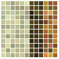 |
sand = colors.theme()
sand.add_range("soft ivory", weight=0.5)
sand.add_range("dark goldenrod", weight=0.25)
sand.add_range("warm brown", weight=0.25)
sand.swatch(2, 2, w=7, h=7, padding=1)
|
You can retrieve an individual (random) color from the theme with the theme.color() method, or a color list with the theme.colors() method. The weight of each range is taken into account - heavier ranges will output more colors.
theme.color(d=0.035)
theme.colors(n=10, d=0.035)
The optional d parameter provides a slight variation in brightness and saturation.
To retrieve a single color you can also simply call the theme as a command. Or to retrieve
multiple colors you can treat it as a list containing length colors (the length
parameter in the theme() command).
size(550, 275)
background( sand() )
colors.shadow(alpha=0.4, dx=-40, blur=10)
for clr in sand:
fill(clr)
translate(10)
scale(0.96)
skew(10)
rect(0, -40, 400, 400)
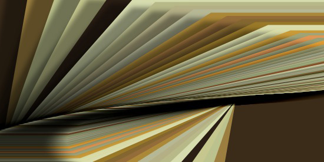
A color theme also has the standard copy(), swatch() and swarm() methods. The swatch() method has an additional grouped parameter. When set to True, provides a more compact layout.
You can use the + operator to add two themes together or test if a color is part of a theme with the in operator.
Another interesting method is theme.recombine(). You can use it to create a new generation from two parent themes using a cut-and-splice techniques. Check the examples included in the library.
theme1.recombine(theme2, d=0.7)
Aggregated themes
The Colors library comes bundled with more than four thousand color themes, grouped into four categories: emotion, nature, adjectives, and basic english words. These themes have been harvested from the web using the technique explained in the Prism example. Some of them look great, others decent, others bad. But it’s a good source to get inspiration nonetheless.
To load an aggregated theme, create a theme with a name:
t = colors.theme("sky", guess=True)
background( colors.list(t).darkest)
t.swarm(50, 50)
| |
| 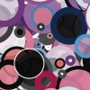 |
t = colors.theme("love", guess=True)
background( colors.list(t).darkest)
t.swarm(50, 50)
|
Adjectives and emotions work best. If a word is not found an exception will be raised. When the optional guess parameter is True, a theme will be returned for a word that closely matches the given name.
Aggregating colors from the web
If you also have the Web library installed, you can expand the database of aggregated themes with your own queries. The google() and yahoo() commands will query the web and return a color theme based on the top colors and shades that appear in the content of web pages (see Prism).
google(query)
yahoo(query, license=None)
The command returns a color theme. With the yahoo() command, you can specify your own Yahoo! license key with the optional license parameter. It will take some time to retrieve all the information from the web the first time. After that, the search query is stored locally and can be retrieved instantly.
Another way to get color information (with good results) is by measuring pixels in online images. The morguefile() command will scan thumbnails in the morgueFile archive for colors:
morguefile(query, n)
The command will return a color list with n colors.
Using a shader for lighting effects
The Colors library has a useful shader() command that simulates a source of light. You can control the source of the light, its direction and strength across the canvas to determine the colors of onscreen elements.
shader(x, y, dx, dy, radius=300, angle=0, spread=90)
The x and y is the position of an element on the canvas. The dx and dy is the position of the lightsource. Based on the distance between the two a number from 0.0 (no light) to 1.0 (full light) is returned, representing how much light the element receives. The radius determines the strength of the light (how far it reaches), angle determines the direction in which light is shining (None if it shines equally in all directions) and spread determines the extent of the beam (wide or narrow).
In this example a light source is positioned in the lower right corner. The value returned
from the shader() command is used to modify each oval’s brightness.
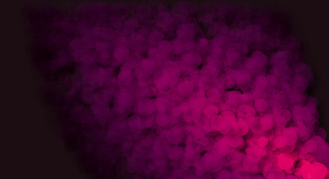
size(550, 300)
background(0.1,0,0.05)
colormode(HSB)
colors.shadow()
for i in range(3000):
x = random(WIDTH)
y = random(HEIGHT)
r = random(10,30)
d = colors.shader(x, y, 550, 300, angle=150)
# HSB is brighter and opaque in the centre of the light.
fill(0.84+d*0.1, 1, 0.2+0.8*d, d)
oval(x, y, r, r)
We can get different effects by modifying the position, radius and spread of the light:
d = colors.shader(x, y, 275, 300, radius=200, angle=90, spread=180)
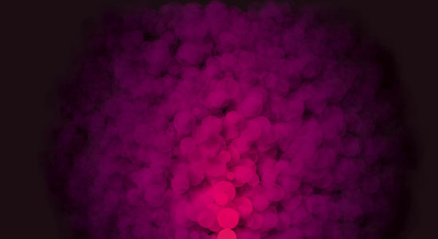
When used together with shadow() and gradientpath(), we can now create compositions with a realistic sense of depth:
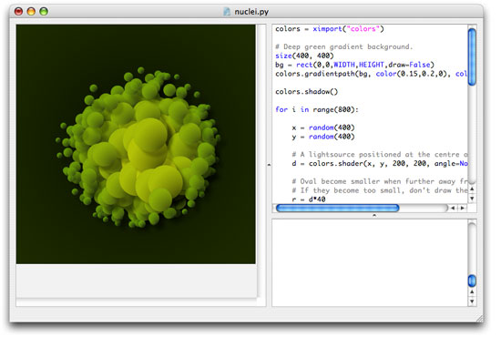
# Deep green gradient background.
size(400, 400)
bg = rect(0, 0, WIDTH, HEIGHT, draw=False)
colors.gradientpath(bg, color(0.15,0.2,0), color(0,0,0))
colors.shadow()
for i in range(800):
x = random(400)
y = random(400)
# A lightsource positioned at the centre of the canvas.
d = colors.shader(x, y, 200, 200, angle=None, radius=150)
# Oval become smaller when further away from the light.
# If they become too small, don't draw them.
r = d*40
if r < 4: continue
p = oval(x, y, r*2, r*2, draw=False)
# Two colors for an oval gradient fill.
# The green becomes lighter and more opaque
# when elements are nearer to the light.
nostroke()
clr1 = color(0.4+d*0.5, 0.6+d*0.3, 0, 0.75)
clr2 = color(0, 0, 0, d)
colors.gradientpath(p, clr1, clr2, alpha=0.5+d, dx=r, dy=r)
Let’s just add a few more bells to the script! For each oval at the edge of the nucleus, we’ll draw some curves bending inward.
# add to the script above:
nofill()
stroke(clr1)
strokewidth(0.25)
autoclosepath(False)
if d < 0.3:
for j in range(random(10)):
v = (1-d) * 150
beginpath(x, y)
curveto(x, y, x+random(-v,v), y+random(-v,v), 200, 200)
endpath()
With the Supershape library we can draw all sorts of organic forms. Let’s use it to add a pattern to each oval.
# add to the script above:
supershape = ximport("supershape")
strokewidth(d*0.75)
if d > 0.25:
p = supershape.path(x+r, y+r, r, r, 10, 1.5, -0.5, 1.5)
drawpath(p)
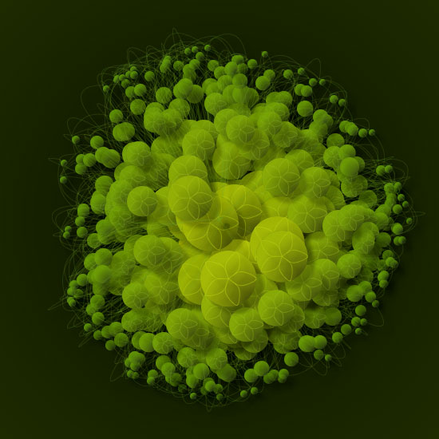
Using dropshadows and gradient fills
The Colors library has a shadow() command and a gradientfill() to add depth to your compositions. Shadows influence all the elements on the canvas while gradients are applied to a given path.
shadow(dx=10, dy=10, alpha=0.25, blur=4.0)
noshadow()
gradientfill(path, clr1, clr2, type="radial",
dx=0, dy=0, spread=1.0, angle=0, alpha=1.0)
The shadow() and noshadow() commands work like fill() and nofill(). Once you set a shadow all the subsequent elements you draw to the canvas will have a dropshadow (or until nofill() is called). The dx and dy define the shadow’s offset, alpha the shadow’s opacity and blur its sharpness.
The gradientfill() command takes a given path just like drawpath() and draws it to the screen filled with a gradient ranging between colors clr1 and clr2. The type of gradient can be ‘radial’ or ‘linear’.
The spread parameter is the distance between the two colors. It can be a relative float number between 0.0 and 1.0 or an absolute int. In the case of a float, 1.0 represents the highest of either width and height for radial gradients, and the lowest of width and height for linear gradients.
It’s also useful to note the alpha parameter. When a gradient fill is drawn, the path
is first filled with an opaque color, and the gradient mask is then drawn on top of that. While
clr1 and clr2 can have their individual alpha value, alpha controls the
opacity of the opaque underground. When you hide the opaque underground, no shadows will be
rendered for this layer - so it’s bit of tweaking to combine shadows and gradients.
An example with shadows and gradient supershapes:
# Enable dropshadows
colors.shadow(alpha=0.75)
rotate(90)
for i in range(100):
# Combination of rotate, scale and translate yields a spiral.
rotate(14)
scale(0.95)
translate(50, 0)
# A pointy supershape path.
supershape = ximport("supershape")
path = supershape.path(650, 500, 350, 350, 6, 0.74, 0.3, -4.64-i)
# The gradient fill.
# Notice how the second color alters in each iteration.
colors.gradientfill(
path,
color(0.0, 0.6, 0.9, 0.25),
color(0.18+i*0.03, 0.0, 0.1+i*0.01, 0.9-i*0.02),
dx=88-i*10, dy=-25+i,
spread=0.83,
alpha=0.25
)